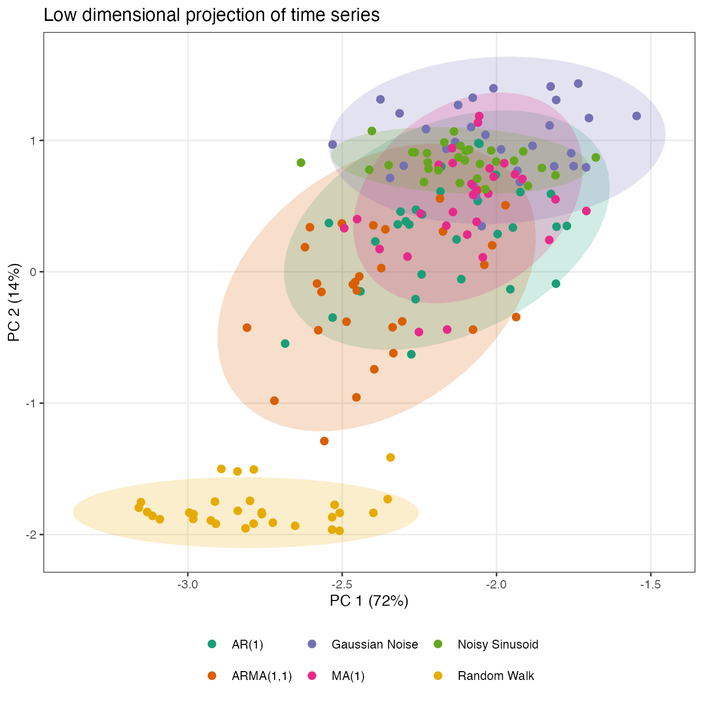
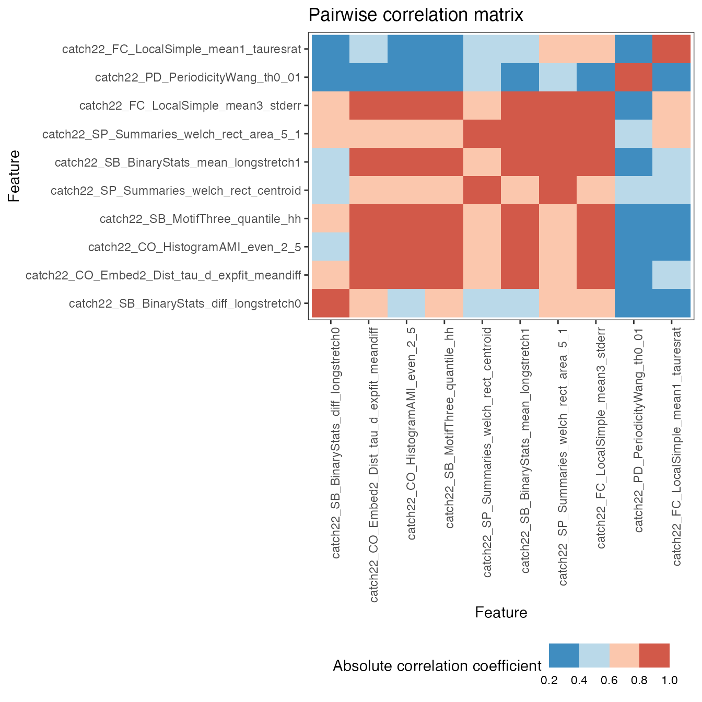

Purpose
The theft
package for R facilitates user-friendly access to a structured
analytical workflow for the extraction of time-series features from six
different feature sets (or a set of user-supplied features):
"catch22", "feasts", "Kats",
"tsfeatures", "tsfresh", and
"TSFEL" theftdlc extends this feature-based
ecosystem by providing a suite of functions for analysing, interpreting,
and visualising time-series features calculated using
theft.
Core calculation functions
To explore package functionality, we are going to use a dataset that
comes standard with theft called simData. This
dataset contains a collection of randomly generated time series for six
different types of processes. The dataset can be accessed via:
theft::simDataThe data follows the following structure:
head(simData)
#> values timepoint id process
#> Gaussian Noise.1 -0.6264538 1 Gaussian Noise_1 Gaussian Noise
#> Gaussian Noise.2 0.1836433 2 Gaussian Noise_1 Gaussian Noise
#> Gaussian Noise.3 -0.8356286 3 Gaussian Noise_1 Gaussian Noise
#> Gaussian Noise.4 1.5952808 4 Gaussian Noise_1 Gaussian Noise
#> Gaussian Noise.5 0.3295078 5 Gaussian Noise_1 Gaussian Noise
#> Gaussian Noise.6 -0.8204684 6 Gaussian Noise_1 Gaussian NoiseWe will use theft to quickly calculate features using
the catch22 set:
feature_matrix <- calculate_features(data = simData,
id_var = "id",
time_var = "timepoint",
values_var = "values",
group_var = "process",
feature_set = "catch22",
seed = 123)Data quality checks
The core calculate_features function in
theft returns an object of class
feature_calculations. Objects of this type are purposefully
looked-for by other functions in theftdlc. Because it is a
class, simple methods such as plot() can be called on the
object to produce a range of statistical graphics. The first is a
visualisation of the data types of the calculated feature vectors. This
is useful for inspecting which features might need to be dropped due to
large proportions of undesirable (e.g., NA,
NaN etc.) values. We can specify the plot
type = "quality to make this graphic:
plot(feature_matrix, type = "quality")
Data visualisation and low-dimensional projections
The package also comes with additional statistical and graphical functionality:
- Feature by time-series matrix as a heatmap
- Low dimensional projections of the feature space and plotting as a scatterplot
- Pairwise feature correlation matrix as a heatmap
Feature matrices
The function calling type = "matrix" in
plot() on a feature_calculations object takes
it and produces a ggplot object heatmap showing the feature
vectors across the x axis and each time series down the
y axis. Prior to plotting, the function hierarchically
clusters the data across both rows and columns to visually highlight the
empirical structure. Note that you have several options for the
hierarchical clustering linkage algorithm to use:
-
"average"(default) "ward.D""ward.D2""single""complete""mcquitty""median""centroid"
See the hclust
documentation for more information.
Note that the legend for this plot (and other matrix visualisations
in theftdlc) have been discretised for visual clarity as
continuous legends can be difficult to interpret meaningful value
differences easily.
plot(feature_matrix, type = "matrix", norm_method = "RobustSigmoid")You can control the normalisation type with the
norm_method argument, whether to rescale to the unit
interval after normalisation with the unit_int argument.
norm_method and all normalisation of feature vectors in
theftdlc is handled by the normaliseR
package. You can also control the hierarchical clustering method with
the clust_method argument (the example above used defaults
so manual specification was not needed).
Individual feature distributions
Plotting the entire feature matrix is useful, but sometimes we wish
to understand the distributions of individual features. This is
particularly useful if there are different groups in your data (such as
in a time-series classification context). We can again use the
plot() generic here to draw violin plots through setting
type = "violin". Note that for violin plots, we also need
to tell the function which features we wish to plot (i.e., a vector of
characters specifying feature names from the names column
in your feature_calculations object). For simplicity, we
will just plot two random features from catch22 here:

Note that when using these defined plot() generics, you
can pass any additional arguments to certain geoms to control the plot
look through the ... argument in the plot()
function. Below is a guide to where these arguments go depending on the
plot type:
-
type = "quality"—...goes toggplot2::geom_bar -
type = "matrix"—...goes toggplot2::geom_raster -
type = "cor"—...goes toggplot2::geom_raster -
type = "violin"—...goes toggplot2::geom_point
For example, we may wish to control the point size and transparency in the above plot (not rendered here for space):
Low dimensional projections
Low-dimensional projections are a useful tool for visualising the structure of high-dimensional datasets in low-dimensional spaces. In machine learning for time-series data, we are often interested in representing a time-series dataset in a two-dimensional projection of the high-dimensional feature space. This projection which can reveal structure in the dataset, including how different labeled classes are organized.
The theftdlc function project takes the
feature_calculations object and performs one of the
following dimension reduction techniques on it to reduce its
dimensionality to a bivariate state which can then be easily
plotted:
- Principal components analysis (PCA)—
"PCA" -
\(t\)-Stochastic Neighbor Embedding
(\(t\)-SNE)—
"tSNE" - Classical multidimensional scaling
(MDS)—
"ClassicalMDS" - Kruskal’s non-metric multidimensional
scaling—
"KruskalMDS" - Sammon’s non-linear mapping non-metric multidimensional
scaling—
"SammonMDS" - Uniform Manifold Approximation and Projection for Dimension
Reduction (UMAP)—
"UMAP"
The result is stored in a custom object class called
feature_projection. project takes the
following arguments:
-
data—feature_calculationsobject containing the raw feature matrix produced bytheft::calculate_features -
norm_method—character denoting the rescaling/normalising method to apply. Can be one of"zScore","Sigmoid","RobustSigmoid","MinMax", or"MaxAbs". Defaults to"zScore" -
unit_int—Boolean whether to rescale into unit interval \([0,1]\) after applying normalisation method. Defaults toFALSE -
low_dim_method—character specifying the low dimensional embedding method to use. Can be one of"PCA"or"tSNE","ClassicalMDS","KruskalMDS","SammonMDS", or"UMAP". Defaults to"PCA" -
na_removal—character defining the way to deal withNAsproduced during feature calculation. Can be one of"feature"or"sample"."feature"removes all features that produced anyNAsin any sample, keeping the number of samples the same."sample"omits all samples that produced at least oneNA. Defaults to"feature" -
seed—integer to fix R’s random number generator to ensure reproducibility. Defaults to123 -
...arguments to be passed to the respective function specified bylow_dim_method
project returns an object of class
feature_projection which is essentially a named list
comprised of four elements:
-
"Data"—thefeature_calculationsobject supplied toproject -
"ModelData"—the wide matrix of filtered data supplied to the model fit -
"ProjectedData"—a tidydata.frameof the two-dimensional embedding -
"ModelFit"—the raw model object from the dimensionality reduction algorithm
low_dim <- project(feature_matrix,
norm_method = "RobustSigmoid",
unit_int = TRUE,
low_dim_method = "PCA",
seed = 123)We can similarly call plot() on this object to produce a
two-dimensional scatterplot of the results:
plot(low_dim)
As another example, a t-SNE version can be specified in a
similar fashion, with any function parameters for the method supplied to
the ... argument to project. Shaded covariance
ellipses can also be disabled when plotting
feature_projection objects by setting
show_covariance = FALSE. Here is an example where we modify
the perplexity of the t-SNE algorithm:
low_dim2 <- project(feature_matrix,
norm_method = "RobustSigmoid",
unit_int = TRUE,
low_dim_method = "tSNE",
perplexity = 10,
seed = 123)
plot(low_dim2, show_covariance = FALSE)
Pairwise correlations
You can plot correlations between feature vectors using
plot(type = "cor") on a feature_calculations
object:
plot(feature_matrix, type = "cor")
Similarly, you can control the normalisation type with the
norm_method argument and the hierarchical clustering method
with the clust_method argument (the example above used
defaults so manual specification was not needed).
Time-series classification
Feature-by-feature
Since feature-based time-series analysis has shown particular promise
for classification problems, theftdlc includes
functionality for exploring group separation. The function
classify enables you to fit a range of classification
models to enable statistical comparisons using the resampling
methodology presented in this
paper for a detailed review1. This function is meant to serve as a fast
answer that can be used to guide analysis and not a replacement for the
development of a careful statistical pipeline. classify has
the following arguments:
-
data—feature_calculationsobject containing the raw feature matrix produced bytheft::calculate_featureswith an includedgroupcolumn as pertheft::calculate_features -
classifier—functionspecifying the classifier to fit. Should be a function with 2 arguments:formulaanddata. Please note thatclassifyz-scores data prior to modelling using the train set’s information so disabling default scaling if your function uses it is recommended. Defaults toNULLwhich means the following linear SVM is fit:classifier = function(formula, data){mod <- e1071::svm(formula, data = data, kernel = "linear", scale = FALSE, probability = TRUE)} -
train_size—Numeric value denoting the proportion of samples to use in the training set. Defaults to0.75 -
n_resamples—Integer denoting the number of resamples to calculate. Defaults to30 -
by_set—Boolean specifying whether to compute classifiers for each feature set. Defaults toTRUE(see below section “Multi-feature” for more on this). IfFALSE, the function will instead find the best individually-performing features -
use_null—Boolean whether to fit null models where class labels are shuffled in order to generate a null distribution that can be compared to performance on correct class labels. Defaults toFALSE. This is known as permutation testing -
seed—Integer to fix R’s random number generator to ensure reproducibility. Defaults to123
Since we are interested in individual features in this section, we
will calculate both main and null results for each feature using just
5 resamples for efficiency (in practice, we would use
more!) with the default linear SVM:
feature_classifiers <- classify(feature_matrix,
by_set = FALSE,
n_resamples = 5,
use_null = TRUE)To show you how simple it is to specify a different classifier, we
can instead maybe use a radial basis function SVM (though you are
absolutely not limited to just e1071 models! You can use
anything that can be used with R’s predict generic as
classify internally constructs confusion matrices from
model predictions):
myclassifier <- function(formula, data){
mod <- e1071::svm(formula, data = data, kernel = "radial", scale = FALSE,
probability = TRUE)
}
feature_classifiers_radial <- classify(feature_matrix,
classifier = myclassifier,
by_set = FALSE,
n_resamples = 5,
use_null = TRUE)While have raw classification results is useful, we often also would
like to statistical evaluate some facet of it. theftdlc
includes the function compare_features for doing this.
compare_features contains the following arguments:
-
data—List object containing the classification outputs produce byclassify -
metric—Character denoting the classification performance metric to use in statistical testing. Can be one of"accuracy","precision","recall","f1". Defaults to"accuracy" -
by_set—Boolean specifying whether you want to compare feature sets (ifTRUE) or individual features (ifFALSE). Defaults toTRUEbut this is contingent on whether you computed by set or not inclassify -
hypothesis—Character denoting whether p-values should be calculated for each feature set or feature (depending onby_setargument) individually relative to the null ifuse_null = TRUEinclassifythrough"null", or whether pairwise comparisons between each set or feature should be conducted on main model fits only through"pairwise". Defaults to"null" -
p_adj—Character denoting the adjustment made to p-values for multiple comparisons. Should be a valid argument tostats::p.adjust. Defaults to"none"for no adjustment."holm"is recommended as a starting point if adjustments are sought
We can use compare_features to evaluate how well each
individual feature performs relative to its empirical null distribution
(noting that we are using the defaults for the other arguments for code
cleanliness):
feature_vs_null <- compare_features(feature_classifiers,
by_set = FALSE,
hypothesis = "null")
head(feature_vs_null)
#> hypothesis
#> 1 catch22_CO_Embed2_Dist_tau_d_expfit_meandiff != own null
#> 2 catch22_CO_f1ecac != own null
#> 3 catch22_CO_FirstMin_ac != own null
#> 4 catch22_CO_HistogramAMI_even_2_5 != own null
#> 5 catch22_CO_trev_1_num != own null
#> 6 catch22_DN_HistogramMode_10 != own null
#> names
#> 1 catch22_CO_Embed2_Dist_tau_d_expfit_meandiff
#> 2 catch22_CO_f1ecac
#> 3 catch22_CO_FirstMin_ac
#> 4 catch22_CO_HistogramAMI_even_2_5
#> 5 catch22_CO_trev_1_num
#> 6 catch22_DN_HistogramMode_10
#> original_names feature_set metric feature_mean
#> 1 CO_Embed2_Dist_tau_d_expfit_meandiff catch22 accuracy 0.40444444
#> 2 CO_f1ecac catch22 accuracy 0.29777778
#> 3 CO_FirstMin_ac catch22 accuracy 0.31111111
#> 4 CO_HistogramAMI_even_2_5 catch22 accuracy 0.29777778
#> 5 CO_trev_1_num catch22 accuracy 0.11111111
#> 6 DN_HistogramMode_10 catch22 accuracy 0.08444444
#> null_mean t_statistic p.value
#> 1 0.12000000 4.894202 0.008077588
#> 2 0.09777778 2.371708 0.076678140
#> 3 0.09777778 2.317462 0.081362957
#> 4 0.10666667 2.007068 0.115183542
#> 5 0.07111111 3.674235 0.021311641
#> 6 0.06666667 0.560112 0.605286626Or to conduct pairwise comparisons between individual features:
pairwise_features <- compare_features(feature_classifiers,
by_set = FALSE,
hypothesis = "pairwise",
p_adj = "holm")
head(pairwise_features)
#> hypothesis
#> 1 catch22_CO_Embed2_Dist_tau_d_expfit_meandiff != catch22_CO_f1ecac
#> 2 catch22_CO_Embed2_Dist_tau_d_expfit_meandiff != catch22_CO_FirstMin_ac
#> 3 catch22_CO_Embed2_Dist_tau_d_expfit_meandiff != catch22_CO_HistogramAMI_even_2_5
#> 4 catch22_CO_Embed2_Dist_tau_d_expfit_meandiff != catch22_CO_trev_1_num
#> 5 catch22_CO_Embed2_Dist_tau_d_expfit_meandiff != catch22_DN_HistogramMode_10
#> 6 catch22_CO_Embed2_Dist_tau_d_expfit_meandiff != catch22_DN_HistogramMode_5
#> names_a names_b
#> 1 catch22_CO_Embed2_Dist_tau_d_expfit_meandiff catch22_CO_f1ecac
#> 2 catch22_CO_Embed2_Dist_tau_d_expfit_meandiff catch22_CO_FirstMin_ac
#> 3 catch22_CO_Embed2_Dist_tau_d_expfit_meandiff catch22_CO_HistogramAMI_even_2_5
#> 4 catch22_CO_Embed2_Dist_tau_d_expfit_meandiff catch22_CO_trev_1_num
#> 5 catch22_CO_Embed2_Dist_tau_d_expfit_meandiff catch22_DN_HistogramMode_10
#> 6 catch22_CO_Embed2_Dist_tau_d_expfit_meandiff catch22_DN_HistogramMode_5
#> metric names_a_mean names_b_mean t_statistic p.value p_value_adj
#> 1 accuracy 0.4044444 0.29777778 5.237229 6.352257e-03 1.0000000
#> 2 accuracy 0.4044444 0.31111111 3.500000 2.489616e-02 1.0000000
#> 3 accuracy 0.4044444 0.29777778 2.449490 7.048400e-02 1.0000000
#> 4 accuracy 0.4044444 0.11111111 9.241849 7.620017e-04 0.1699264
#> 5 accuracy 0.4044444 0.08444444 6.743418 2.520576e-03 0.5368828
#> 6 accuracy 0.4044444 0.06222222 15.717559 9.571521e-05 0.0220145We can then use ggplot2 to summarise and visualise our
results. Here is a pairwise correlation plot between the top 10 features
in catch22 for this toy problem. We are just simply
filtering the original full feature data and making use of the
plot generic defined for objects of class
feature_calculations:
top_10 <- feature_vs_null %>%
dplyr::slice_min(p.value, n = 10) %>%
dplyr::select(c(feature_set, original_names, p.value))
feature_matrix_filt <- feature_matrix %>%
dplyr::filter(feature_set %in% top_10$feature_set & names %in% top_10$original_names)
feature_matrix_filt <- structure(feature_matrix_filt, class = c("feature_calculations", "data.frame"))
plot(feature_matrix_filt, type = "cor")
We can also easily draw a violin plot of the top 10 features to visualise the distributions by group:
plot(feature_matrix_filt,
type = "violin",
feature_names = top_10$original_names)
Finally, theftdlc also contains a function
interval for summarising the results of
classify. interval takes the following
arguments:
-
data—list object containing the classification outputs produce byclassify -
metric—character denoting the classification performance metric to calculate intervals for. Can be one of"accuracy","precision","recall","f1". Defaults to"accuracy" -
by_set—Boolean specifying whether to compute intervals for each feature set. Defaults toTRUE. IfFALSE, the function will instead calculate intervals for each feature -
type—character denoting whether to calculate a \(\pm\) SD interval with"sd", confidence interval based off the \(t\)-distribution with"qt", or based on a quantile with"quantile". Defaults to"sd" -
interval—numeric scalar denoting the width of the interval to calculate. Defaults to1iftype = "sd"to produce a \(\pm 1\) SD interval. Defaults to0.95iftype = "qt"ortype = "quantile"for a \(95\%\) interval -
model_type—character denoting whether to calculate intervals for main models with"main"or null models with"null"if theuse_nullargument when usingclassifywasuse_null = TRUE. Defaults to"main"
We can evidently use interval to produce a variety of
different summaries for us. For example, we might wish to compute the
\(\pm1\) SD interval for each feature’s
main model classification accuracy values (note that the defaults for
the function do this for us, so we only need to set
by_set = FALSE manually):
interval(feature_classifiers, by_set = FALSE)
#> names .mean .lower
#> 1 catch22_CO_Embed2_Dist_tau_d_expfit_meandiff 0.40444444 0.38585200
#> 2 catch22_CO_f1ecac 0.29777778 0.27790162
#> 3 catch22_CO_FirstMin_ac 0.31111111 0.28888889
#> 4 catch22_CO_HistogramAMI_even_2_5 0.29777778 0.26407611
#> 5 catch22_CO_trev_1_num 0.11111111 0.09539763
#> 6 catch22_DN_HistogramMode_10 0.08444444 0.05547021
#> 7 catch22_DN_HistogramMode_5 0.06222222 0.05228414
#> 8 catch22_DN_OutlierInclude_n_001_mdrmd 0.05777778 0.04560617
#> 9 catch22_DN_OutlierInclude_p_001_mdrmd 0.06222222 0.02246990
#> 10 catch22_FC_LocalSimple_mean1_tauresrat 0.28888889 0.25746192
#> 11 catch22_FC_LocalSimple_mean3_stderr 0.50222222 0.47688499
#> 12 catch22_IN_AutoMutualInfoStats_40_gaussian_fmmi 0.29333333 0.27474089
#> 13 catch22_MD_hrv_classic_pnn40 0.25333333 0.18931173
#> 14 catch22_PD_PeriodicityWang_th0_01 0.15111111 0.13251867
#> 15 catch22_SB_BinaryStats_diff_longstretch0 0.33333333 0.28121760
#> 16 catch22_SB_BinaryStats_mean_longstretch1 0.35111111 0.30836581
#> 17 catch22_SB_MotifThree_quantile_hh 0.46222222 0.43324799
#> 18 catch22_SB_TransitionMatrix_3ac_sumdiagcov 0.32000000 0.27391902
#> 19 catch22_SC_FluctAnal_2_dfa_50_1_2_logi_prop_r1 0.08444444 0.06010122
#> 20 catch22_SC_FluctAnal_2_rsrangefit_50_1_logi_prop_r1 0.25333333 0.22799610
#> 21 catch22_SP_Summaries_welch_rect_area_5_1 0.60000000 0.56486358
#> 22 catch22_SP_Summaries_welch_rect_centroid 0.53333333 0.50611678
#> .upper
#> 1 0.42303689
#> 2 0.31765394
#> 3 0.33333333
#> 4 0.33147945
#> 5 0.12682460
#> 6 0.11341868
#> 7 0.07216030
#> 8 0.06994939
#> 9 0.10197454
#> 10 0.32031586
#> 11 0.52755945
#> 12 0.31192578
#> 13 0.31735493
#> 14 0.16970356
#> 15 0.38544906
#> 16 0.39385641
#> 17 0.49119646
#> 18 0.36608098
#> 19 0.10878767
#> 20 0.27867057
#> 21 0.63513642
#> 22 0.56054989Multi-feature
Since theft contains entire sets of features, we can
also use classify to compare them at the set level through
the by_set argument. Let’s try both catch22
and a custom set of just mean and standard deviation:
feature_matrix2 <- calculate_features(data = simData,
group_var = "process",
feature_set = "catch22",
features = list("mean" = mean, "sd" = sd),
seed = 123)
set_classifiers <- classify(feature_matrix2,
by_set = TRUE,
n_resamples = 5,
use_null = TRUE)
head(set_classifiers)
#> $TrainTestSizes
#> train_size test_size
#> 135 45
#>
#> $ClassificationResults
#> model_type resample accuracy mean_precision mean_recall mean_f1_score
#> 1 Main 1 0.86666667 0.90235690 0.90235690 0.9000000
#> 2 Main 2 0.84444444 0.88047138 0.88194444 0.8806479
#> 3 Main 3 0.80000000 0.84785354 0.82702020 0.8317460
#> 4 Main 4 0.82222222 0.86195286 0.86446886 0.8611111
#> 5 Main 5 0.86666667 0.89562290 0.90109890 0.8958333
#> 6 Null 1 0.15555556 0.16734007 0.15575397 0.2266282
#> 7 Null 2 0.13333333 0.18518519 0.10370370 0.3771930
#> 8 Null 3 0.06666667 0.10404040 0.07936508 0.1444444
#> 9 Null 4 0.24444444 0.26153199 0.27103175 0.2406925
#> 10 Null 5 0.24444444 0.22853535 0.23164683 0.2714130
#> 11 Main 1 0.71111111 0.79629630 0.83285714 0.8658046
#> 12 Main 2 0.73333333 0.81481481 0.85666667 0.8941914
#> 13 Main 3 0.68888889 0.77546296 0.78285714 0.8238998
#> 14 Main 4 0.71111111 0.79629630 0.83285714 0.8658046
#> 15 Main 5 0.68888889 0.77777778 0.81500000 0.8379841
#> 16 Null 1 0.00000000 0.00000000 0.00000000 NaN
#> 17 Null 2 0.28888889 0.35416667 0.35294118 0.4358312
#> 18 Null 3 0.04444444 0.04166667 0.20000000 0.4000000
#> 19 Null 4 0.11111111 0.20833333 0.26923077 0.2714286
#> 20 Null 5 0.11111111 0.16666667 0.06410256 0.2272727
#> 21 Main 1 0.68888889 0.72727273 0.68398268 0.6865741
#> 22 Main 2 0.62222222 0.59764310 0.60178710 0.7068449
#> 23 Main 3 0.75555556 0.80744949 0.75476190 0.7578947
#> 24 Main 4 0.77777778 0.79124579 0.77167508 0.7766106
#> 25 Main 5 0.68888889 0.76430976 0.70138889 0.7086835
#> 26 Null 1 0.17777778 0.19730640 0.19444444 0.3869031
#> 27 Null 2 0.08888889 0.10774411 0.08215488 0.1638889
#> 28 Null 3 0.08888889 0.08552189 0.12500000 0.1939394
#> 29 Null 4 0.26666667 0.24532828 0.27420635 0.3099160
#> 30 Null 5 0.17777778 0.15172559 0.14587496 0.2203209
#> feature_set
#> 1 All features
#> 2 All features
#> 3 All features
#> 4 All features
#> 5 All features
#> 6 All features
#> 7 All features
#> 8 All features
#> 9 All features
#> 10 All features
#> 11 User
#> 12 User
#> 13 User
#> 14 User
#> 15 User
#> 16 User
#> 17 User
#> 18 User
#> 19 User
#> 20 User
#> 21 catch22
#> 22 catch22
#> 23 catch22
#> 24 catch22
#> 25 catch22
#> 26 catch22
#> 27 catch22
#> 28 catch22
#> 29 catch22
#> 30 catch22Note that classify constructs a set of
"All features" (i.e., all features across all computed
sets) automatically when \(>2\)
unique feature sets are detected in the feature data. Similar to the
individual feature case, we can also use interval combined
with ggplot2 to summarise our findings. Here is a
comparison of mean accuracy \(\pm 1SD\)
between feature sets:
interval_calcs <- interval(set_classifiers)
interval_calcs %>%
ggplot2::ggplot(ggplot2::aes(x = reorder(feature_set, -.mean), y = .mean,
colour = feature_set)) +
ggplot2::geom_errorbar(ggplot2::aes(ymin = .lower, ymax = .upper)) +
ggplot2::geom_point(size = 5) +
ggplot2::labs(x = "Feature set",
y = "Classification accuracy") +
ggplot2::scale_colour_brewer(palette = "Dark2") +
ggplot2::theme_bw() +
ggplot2::theme(legend.position = "none",
panel.grid.minor = ggplot2::element_blank())
Cluster analysis
theftdlc also supports quick and simple cluster analysis
using either \(k\)-means, hierarchical clustering, or
Gaussian mixture
models through the cluster function.
cluster takes a few similar key arguments to other
theftdlc functions (though defaults are set for all, and so
only data is required for cluster to
work):
-
data—feature_calculationsobject containing the raw feature matrix produced bytheft::calculate_features -
norm_method—character denoting the rescaling/normalising method to apply. Can be one of"zScore","Sigmoid","RobustSigmoid","MinMax", or"MaxAbs". Defaults to"zScore" -
unit_int—Boolean whether to rescale into unit interval \([0,1]\) after applying normalisation method. Defaults toFALSE -
clust_method—character specifying the clustering algorithm to use. Can be one of"kmeans","hclust", or"mclust". Defaults to"kmeans" -
k—integer denoting the number of clusters to extract. Defaults to2 -
features—character vector denoting the names of time-series features to use in the clustering algorithm. Defaults toNULLfor no feature filtering and usage of the entire feature matrix -
na_removal—character defining the way to deal withNAsproduced during feature calculation. Can be one of"feature"or"sample"."feature"removes all features that produced anyNAsin any sample, keeping the number of samples the same."sample"omits all samples that produced at least oneNA. Defaults to"feature" -
seed—integer to fix R’s random number generator to ensure reproducibility. Defaults to123 -
...—additional arguments to be passed tostats::kmeans,stats::hclust, ormclust::Mclustdepending onclust_method
cluster returns an object of class
feature_clusters which is essentially a named list
comprised of two elements:
-
"Data"—thefeature_calculationsobject supplied toclusterwith the cluster label appended -
"ModelFit"—the raw model object from the clustering algorithm
We can easily fit a \(k\)-means
model with k = 6 (since theft::simData
contains data for six different temporal processes):
feature_clusters <- cluster(feature_matrix, k = 6)From here, it’s easy to do any further analysis or data visualisation:
feature_clusters$Data %>%
dplyr::filter(names %in% c("CO_HistogramAMI_even_2_5",
"DN_OutlierInclude_p_001_mdrmd")) %>%
tidyr::pivot_wider(id_cols = c("id", "group", "cluster"),
names_from = "names", values_from = "values") %>%
ggplot2::ggplot(ggplot2::aes(x = CO_HistogramAMI_even_2_5,
DN_OutlierInclude_p_001_mdrmd,
colour = as.factor(cluster))) +
ggplot2::stat_ellipse(ggplot2::aes(fill = as.factor(cluster)), geom = "polygon", alpha = 0.2) +
ggplot2::geom_point() +
ggplot2::labs(colour = "Cluster") +
ggplot2::guides(fill = "none") +
ggplot2::scale_fill_brewer(palette = "Dark2") +
ggplot2::scale_colour_brewer(palette = "Dark2") +
ggplot2::theme_bw() +
ggplot2::theme(legend.position = "bottom",
panel.grid.minor = ggplot2::element_blank())
T. Henderson, A. G., Bryant, and B. D. Fulcher, “Never a Dull Moment: Distributional Properties as a Baseline for Time-Series Classification”, 27th Pacific-Asia Conference on Knowledge Discovery and Data Mining, 2023.↩︎